khatumo.net archive
Khaatumo State Flags and Emblems: Exercise your right and Cast your Vote
By A. Hindi
April 6, 2012
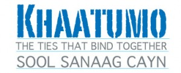
The following are some possible images for Khaatumo State of Somalia as proposed by this Website: In the absence of consistent Images, We are taking the leadership to support Kh-State with Branding and Promotion guidelines. The official Khaatumo State Committee who will decide on the Final Symbols of Khaatumo State may or may not use the suggestions below. Additionally, Please remember that there are other flags and state symbols in the possession of this committee who is expected to come up with Final decisions very soon.Adam Abdullahi Shuuriye of (Lasanod.com) who helped coordinate Khaatumo Media in the Taleex Conference is part of this committee who will collect your votes and then present it to the Khaatumo Executive Committee for final approval. Please cast your democratic vote and click “view full post”.
if you would like to submit fresh ideas and graphics, pls. send them to Email: khaatumas@gmail.com or Admin@lasanod.com. and xargaga@live.com
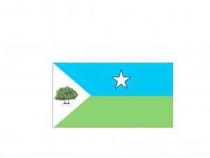
khaatumo State Flag No. A1
what do you think of Khatumo Flag No. A1 *
Calankii la diid
kkkkkkkkkkkkkkkk, Waar kii Calan ahaa maxaa qabsadey
_______________________________________________________________________________________
khaatumo State Flag No. A2
what do you think of Flag No. A2 *
it is plain. what is the meaning of the tree?
_______________________________________________________________________________________
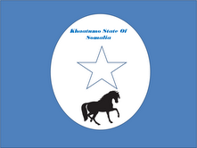
khaatumo State Flag No. A3
what do you think of Flag No. A3 *
Should Darwish be written on the flag?
At the bottom or on the horse
_______________________________________________________________________________________
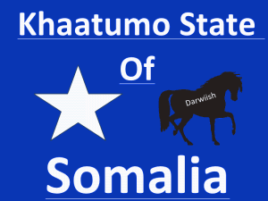
khaatumo State Flag No. A4
what do you think of Flag No. A4 *
waxaan aad u jeclaystay flag no.A3 hadii la waayo waxaan dooran lahaa flag no A4 waayo waxay muujinayaan astaanta goboladeena waa fardaha'e iyo astaanta somaaliya oo ah xidigta shanta gees leh
I think the horse is goodeth idea, whithout any writings on the flag. I like a horse holding the flag. Because the horse and the land represents freedom. No horse lives in a land without a freedom. You can minimize the Somali flag in one part only if u like it. this will show that Khatumo state is part of Somalia
_______________________________________________________________________________________
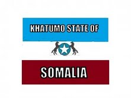
khaatumo State Flag No. A5
what do you think Flag No. A5
- I don't like it4 votes · 80%
- I don't know1 vote · 20%
Total voters: 11 · poll closed
_______________________________________________________________________________________
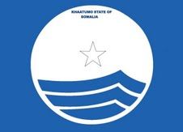
Khaatumo State Flag No. A
What do you think of Flag No. A *
Waxaan Ka codsanayaa guddiga astaan samaynta in calankasta oo ay sameeyan uu la socdo farasku
war faras la'aan ma fiicna marka calnka numver c faraska inoogu dara uun
fadlan calankan meesha xidigta fars ka dhiga
masha aallaah kan ayaa jecleysatay waa astaan mujineysa dhibta ey soo mareen iyo waxa u danbeya
Masha alaah Kan ayaan jeclaystay waa astaan aad uquruxbadan
A/C Faraska iyo xidigtuba hawada socdeen waayo farasku waa Khaatumo Xidigtuna waa Somalia thanks
midabka cas marna waa lagama maarmaan inuu calanka kamid noqdo waayo dad ayaa udhintay
I would like the flag as the national flag with 2 white horses guarding the white star. Symbolizing khaatumo state as the guardin of the Somali unity
_______________________________________________________________________________________
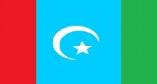
khaatumo State Flag No. B
What do you think Flag No. B *
waxaan leclahay kan
dadku iyo dhulkuba waa somaliland ee joojiya qolada fidnada wadad
Khaatuma state hadii la aqoonsado somaliland maxa u yaal meesha u yaal
I would like the flag as the national flag with 2 white horses guarding the white star. Symbolizing khaatumo state as the guardin of the Somali unity
ma fahmin kuwa leh calanka faras ha ku jiro, waar anigu nin dhulbahante ah ban ahey, inkasto an jeclahay faraska, hadna wa suurto gal ah maha ina faras lagu daro calan, ta labaad waxan uu mahad nagay
_______________________________________________________________________________________
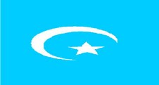
khaatumo State Flag No.C
What do you think of Flag No. C *
Miyaanay idinla ahayn in aan calanka lagu muujinin sawir xayawaan, maadaama ay adkayn doonto in jiilka yar yar ama dadka waaweeyn ee aan farshanka ku fiicnayni ay si sahlan u sawiraan calanka. Calanku waa in uu noqda calaamada sahlan oo astaan u noqon karta qayb ka mid ah qaranka somalia
waxaa ugu quruxbadan calanka labaad oo muujinaya calankeena iyo weliba calaamada islaamka waan u bogey kaas noo daaya
miyeynan aheyn sidatan hoos anu ku qoray
waxaa ugu qurux badan calanka 1aad oo muujinaya wadaninimo misa bil sii dheer si loo kala aqoonsado kan somaliweyn iyo kan goboleedkaption
waa calankii somalia oo wata Bishiii
kaqnaan dooray maxaay idinlatahay
waxaan oran karaa waa kaan arwaax badan ku weeyney maraka qaar kood waxaaban is iraahdaa calanka somaaliya waaba magaca dhulbahante kaftan igama ahh waa igadaacd .waa mahadsantihiin kanaa
KAN AYAAN AAD UGA HELAY RUN AHAANTI WAAYO WAA CALAN BLUA QURUX BADANA BILADNA LEH CIDIGTI SOMALIYANA NICE CALAN
flag No. C is the best flag of all, because it has the Muslin sign and blue flag with the white star in the middle
kan ayaan dooray
calanka #c waxaan u malaynayaa in uu u egyahay mid dalalka yaryar ee muslinka ah ay leeyihiin laakiin waxaa aniga ila qurxoon #4 ama #8
calankan ayaan aad uga helay anigoo ah muwaadin reer khaatumo ah waxanse jeclaan lahaa maadama nabadu tahay astaanta nolosha noloshuna gebi ahaanba ku dhisantahy nabad in liidka ugusareeya laga dhigo cadaan halka cagaarka ahna faras la dhex istaajiyo sidiisa kale waa top mansha allah hadi intaas lagu daro wuxu soobaxayaa calan khatara mahadsanidin
I would like the flag as the national flag with 2 white horses guarding the white star. Symbolizing khaatumo state as the guardin of the Somali unity
_______________________________________________________________________________________
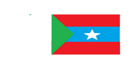
khaatumo State Flag No.D
What do you think of Flag No. D *
waa kan dooqeyga
Salaamulaahi Calykum. Dhamaan waan salamayaa bahada khatumo, aniga argtitada waxaan isleeyahay Astaantu waa ka weyn tahay wax dad rayigood laga qaado waxaan odhan lahaa dad waxan aqoon u leh halaa saaro.Hadiise aan anugu rayigayga ka dhiibto waxaan o dhan lahaa waan aynu ka duwanaanaa astaamaha maamulada kale oo calamadaha badan leh anigu waxaan dooran lahaa calanka buluuga ah oo leh xidigta oo lagu daray oo kaliya bisha sia ka ugu sareeya
I would like the flag as the national flag with 2 white horses Harding the white
_______________________________________________________________________________________
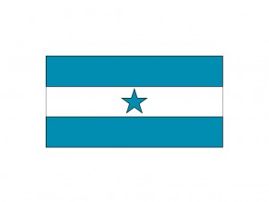
Khaatumo State Flag No.1
What do you think of Kh-State Flag No. 1 *
Waxaa talo ahaan ku wanaagsan in Calanka Soomaaliya aad inoo daysaan oo calamadan yar yar ee degaamadu samaysanayaan muhiimad weyn oo dheer ma leh. laakiin hadii arinku deferal somaliya yeelanayso oo la isku raaco markaas muhiim bay noqonaysaa calankan hada la soo bandhigayna aragtidayda waxaa ku wacnayda midabka buluuga ah in loo daayo ka soomaliya midabka u lee yahay oo buluugan aadka u madow ilama qurux badna
calankan no1 ayaa ugu qurxoon
waxay ila tahay aniga oo eegaya tixgalinayana saddexdan calan ee halkan lagu soo bandhigay in aynu qaadayno hadaynu nahay mamulka khaatumo kan labad ama NO B
waxay ilatahay in calanka ugu best sanyahay kuwa kale
I would like the flag as the national flag with 2 white horses guarding the white star. Symbolizing khaatumo state as the guardin of the Somali unity
_______________________________________________________________________________________
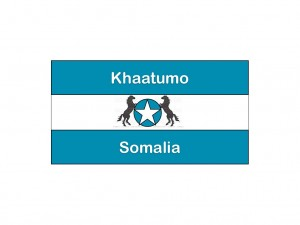
Khaatumo State Flag No.2
What do you think of Flag No.2 *
musawirka wax nool ma banaana
waxaa ugu qurux badan ka labaad masha alaah amina
maanshaa alaah no;2 aad ayuu u qurux badan yahay
I love Calka leh Faraska ee Bluuga ah Flag No 2 Farhiya Jama
aad ayan calankan uga helay
waakaas calamku
I would like the flag as the national flag with 2 white horses guarding the white star. Symbolizing khaatumo state as the guardin of the Somali unity
_______________________________________________________________________________________
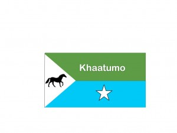
Khaatumo State Flag No. 3
What do you think of Flag No. 3 *
musawirka fardaha waa nool ma banaana diiniyan
caln looma bahana
calankaan waa fiican yahay waana number one laakiin meesha cad in casaan laga dhigo ayaa ila haboon si ay u tus to dhiigiii gobonimada naaga daatay
yaan calanka buluuga ah laga tegin
waxaan aad uga helay calanka buluuga ah iyo faraskii daraawiishta oo si qaabwacan loogu sawiray iyadoon astaantii calanka wax laga bedelin darwiish aadan cabdulaahi shuuriye noolaada adiga iyo inta darwiishnimadu ka dhabka tahay viva khaatumo stae of somalia
I would like the flag as the national flag with 2 white or black horses guarding the white star. Symbolizing khaatumo state as the guardin of the Somali unity
_______________________________________________________________________________________
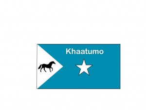
khaatumo State Flag No. 4
What do you think of Flag No. 4 *
CALANKEENU WAA GREEN HAWDHAWAADO CALANKA SUCUUDIGA KA FOGAADA CASAAN OO AH DHIIG YALOW OO AH MURUGO BLU IYO GREEN OO U BADAN GREEN SI DHULKEENU BARWAAQO INOOGU NOQDO ILAAHAY WEEL WEEN BAA WAXLAGU WAYDIISTAA WAAD MAHADSANTIHIIN
Aniga waxa ila qumman ama ila toosan calanka #4 waxana aan ku doortay calaamadihii ay dadku jeclaayeen ee kala ahaa midabka buluugga ah, xiddigta cad ee shan-geesta ah, Faraskii degaanka lagu yiqiin iyo magicii Barakaysnaa ee KHaatumo ayaa ka wada muuqda calanka #4
maasha,allaah waxaa ugu wacan number 4 darwiish indhataag.waxuuna leeyahay macnayaalbadan.oo ,aay kamid tahay galbeed oo nabad kuxorrooby.yuu nadhaafin kaasi
I would like the flag as the national flag with 2 black horses guarding the white star. Symbolizing khaatumo state as the guardin of the Somali unity
_______________________________________________________________________________________
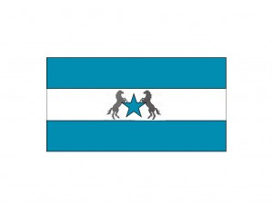
khaatumo State Flag No. 6
What do you think of Flag No. 6 *
calankaan waa ok hadii lagu dari lahaa casaan
I would like the flag as the national flag with 2 black horses guarding the white star. Symbolizing khaatumo state as the guardin of the Somali unity
_______________________________________________________________________________________
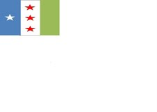
khaatumo State Flag No. 7
What do you think of Flag No. 7 *
calaankaan waa in lagu daraa casaan oomu taagan dhiiga ku daatay gobanima doonka
I would like the flag as the national flag with 2 black horses guarding the white star. Symbolizing khaatumo state as the guardin of the Somali unity
_______________________________________________________________________________________
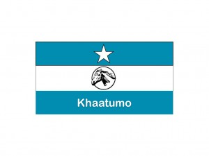
khaatumo State Flag No. 8
What do you think of Flag No. 8 *
this is the flag all khatumo people want
that is true, this is the best khatumo flag
The flag of number eight
it is beautifull one
Aad iyo Aad buu calankani u tilmaayaa dhaman astamaha somalia iyo khatumo state
kan halo daayo waayo dhaman Astamihi la rabay way ku dhan yihiin
I would like the flag as the national flag with 2 black horses guarding the white star. Symbolizing khaatumo state as the guardin of the Somali unity
_______________________________________________________________________________________
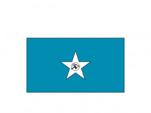
khaatumo State Flag No. 9
What do you think of Flag No. 9 *
maxaa calamadda kuligood faraska loogu sawiray?
farasku wa calaamada drawiishta oo sinama loogama tegi karo
I would like the flag as the national flag with 2 black horses guarding the white star. Symbolizing khaatumo state as the guardin of the Somali unity
waryadeeheen reeeeeeeeeeer khaatomo seeg ka fadhista wadak waxba ma tihiin meel walbood joogataan waxaad tihii daba dhilifyio aan waxba garanen somali poudland somali wax aad kla tihiin ayaaba jiri khaatomo seegayaaa abiid
_______________________________________________________________________________________
For any further comments, feedback or clarifications pls address them to: Khaatumas@gmail.com
The original page
As it appeared on khatumo.net
The voting widgets on this page collected readers’ comments and tallies — in Somali and English — which a text version cannot carry. They survive in the original.